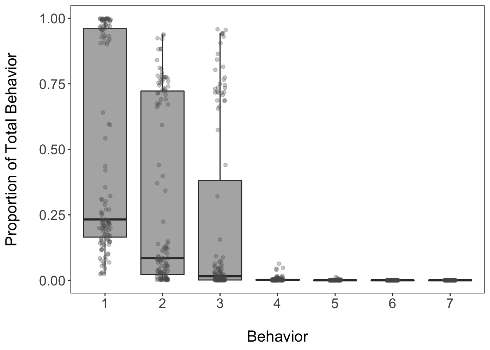
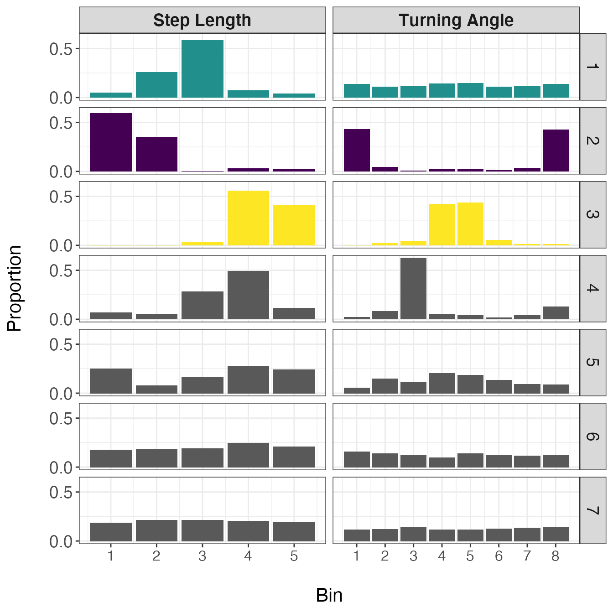
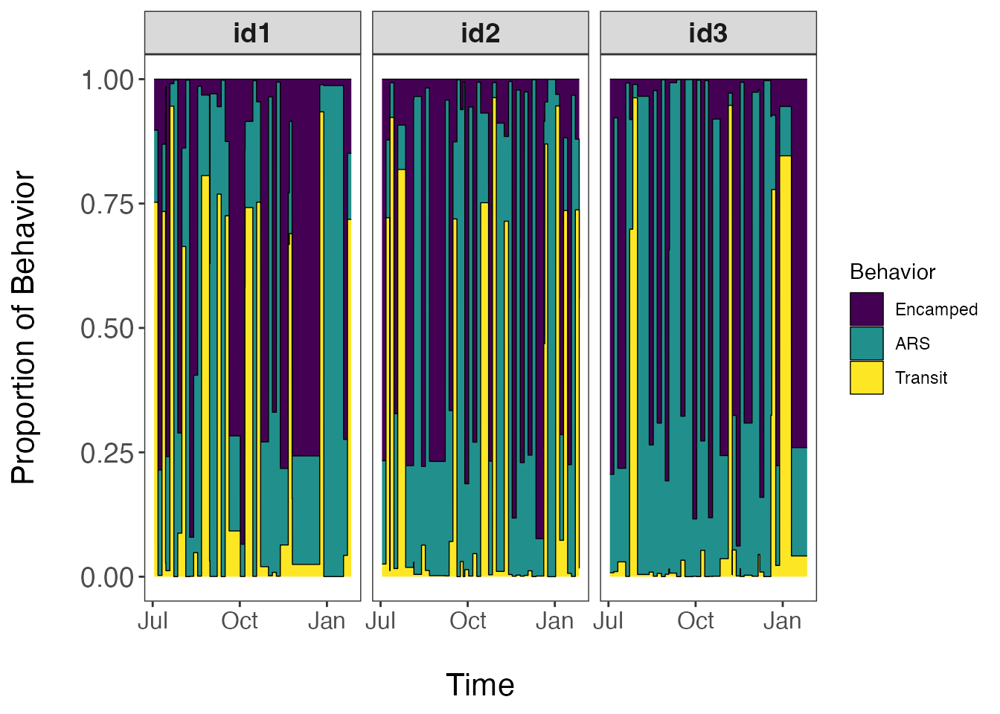
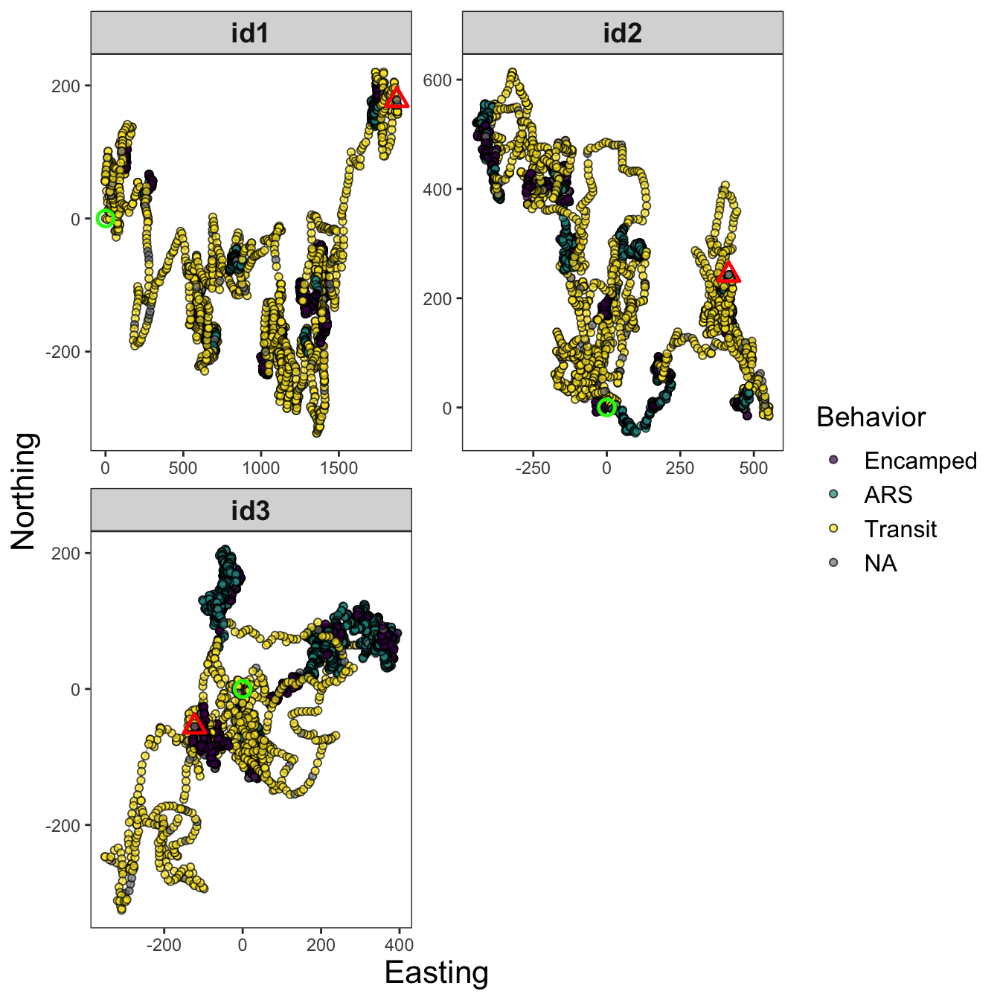
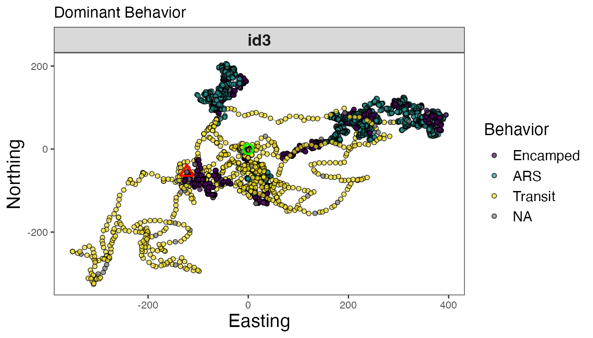
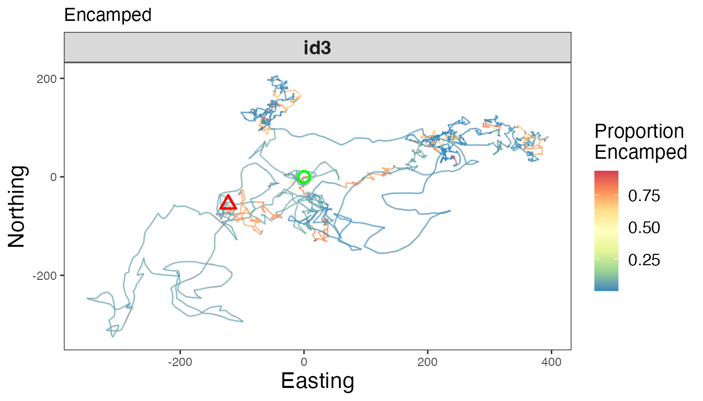
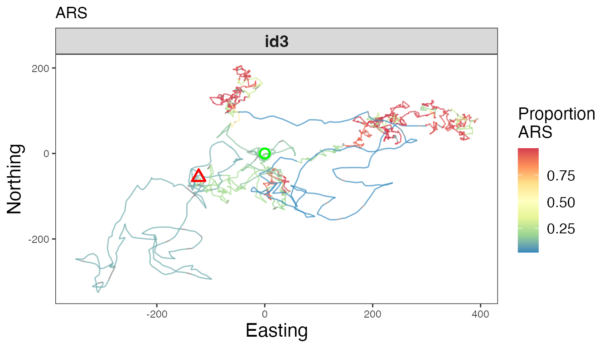
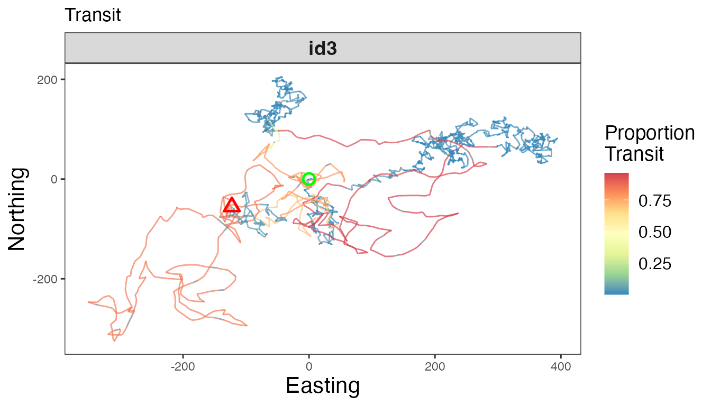
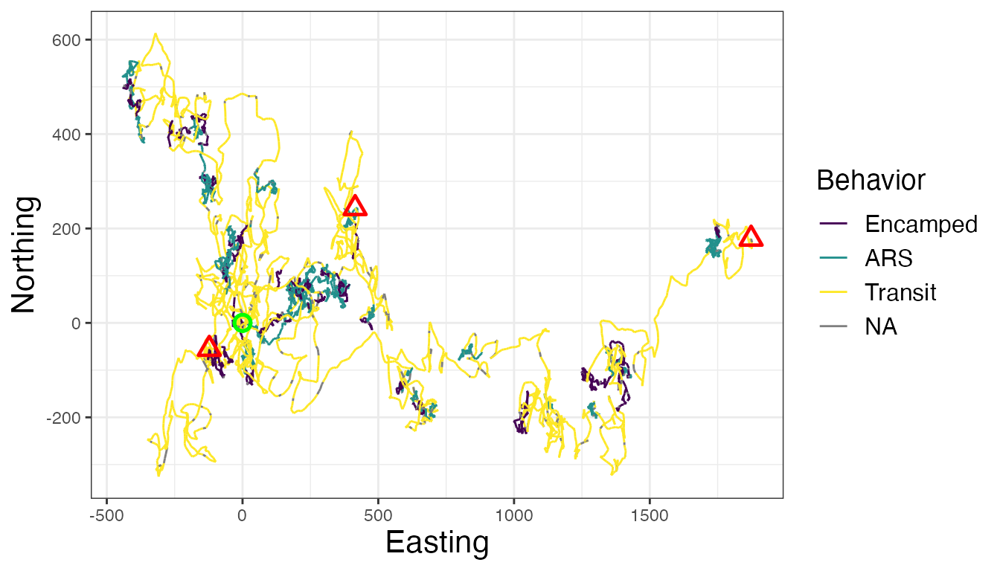

vignettes/Cluster-track-segments.Rmd
Cluster-track-segments.RmdOnce observations from all animal IDs have been assigned to track segments, these can now be clustered to (1) estimate the optimal number of states, (2) characterize the state-specific distributions of data streams, and (3) estimate the proportion of each behavior per track segment. This tutorial will show how to run the Latent Dirichlet Allocation (LDA) model, as well as how to interpret and visualize the results.
library(bayesmove)
library(dplyr)
library(ggplot2)
library(purrr)
library(tidyr)
library(lubridate)
# Load data
data(tracks.seg)
# Check data structure
str(tracks.seg)
#> 'data.frame': 14096 obs. of 12 variables:
#> $ id : chr "id1" "id1" "id1" "id1" ...
#> $ date : POSIXct, format: "2020-07-02 12:00:00" "2020-07-02 13:00:00" ...
#> $ x : num 0 10.6 25.5 31.2 36.2 ...
#> $ y : num 0 -1.67 -0.61 9.54 19.87 ...
#> $ step : num 10.7 14.97 11.65 11.45 7.24 ...
#> $ angle: num NA 0.227 0.987 0.067 0.032 ...
#> $ dt : num 3600 3600 3600 3600 3600 3600 3600 3600 3600 3600 ...
#> $ obs : int 1 2 3 4 5 6 7 8 9 10 ...
#> $ time1: int 1 2 3 4 5 6 7 8 9 10 ...
#> $ SL : num 5 5 5 5 4 2 5 2 4 5 ...
#> $ TA : int NA 5 6 5 5 1 5 8 5 4 ...
#> $ tseg : num 1 1 1 1 1 1 1 1 1 1 ...Using the data frame returned by the assign_tseg
function, we will now prepare the data for the LDA model by summarizing
the number of observations assigned to each step length and turning
angle bin per track segment.
# Select only id, tseg, SL, and TA columns
tracks.seg2<- tracks.seg[,c("id","tseg","SL","TA")]
# Summarize observations by track segment
nbins<- c(5,8)
obs<- summarize_tsegs(dat = tracks.seg2, nbins = nbins)
head(obs)
#> id tseg y1.1 y1.2 y1.3 y1.4 y1.5 y2.1 y2.2 y2.3 y2.4 y2.5 y2.6 y2.7 y2.8
#> 1 id1 1 4 7 10 41 28 7 3 1 26 37 7 0 8
#> 2 id1 2 46 31 9 8 1 40 9 3 3 4 5 5 26
#> 3 id1 3 9 6 9 36 27 6 4 5 39 22 4 1 6
#> 4 id1 4 0 1 2 3 1 0 0 0 1 2 3 0 1
#> 5 id1 5 47 31 10 6 4 33 9 3 6 4 3 8 32
#> 6 id1 6 0 1 6 53 31 1 2 4 40 40 3 1 0Based on this output, we can see that each row shows the observation
counts per track segment. The column names beginning with y
denote the data streams, where y1 is the first data stream
column (SL) and y1.1 represents the first bin of the SL
variable. The same follows for turning angles, which were discretized
into 8 bins and are therefore described by y2.1 - y2.8.
This data frame contains segment-level summaries for all IDs, which will
be analyzed together. This approach assumes that all individuals exhibit
a common repertoire of behaviors despite nuanced inter-individual
differences. Therefore, it provides a measure of estimating
population-level behavioral states as long as there are a substantial
number of individuals analyzed. Now the data are in the proper format to
be analyzed by the LDA model.
set.seed(1)
# Prepare for Gibbs sampler
ngibbs<- 1000 #number of MCMC iterations for Gibbs sampler
nburn<- ngibbs/2 #number of iterations for burn-in
nmaxclust<- max(nbins) - 1 #one fewer than max number of bins used for data streams
ndata.types<- length(nbins) #number of data types
# Priors
gamma1<- 0.1
alpha<- 0.1
# Run LDA model
res<- cluster_segments(dat=obs, gamma1=gamma1, alpha=alpha,
ngibbs=ngibbs, nmaxclust=nmaxclust,
nburn=nburn, ndata.types=ndata.types)Similar to checking convergence of the segmentation model, we must also inspect a trace-plot of log likelihood from the LDA to discern if the model reached convergence.
# Check traceplot of log likelihood
plot(res$loglikel, type='l', xlab = "Iteration", ylab = "Log Likelihood")The trace-plot of the log likelihood has reached an asymptote, denoting that the model has converged on the posterior. We can now use these results to determine the optimal number of latent behavioral states that are present, as well as to characterize these state-specific distributions, and to attribute proportions of time spent in each behavior to track segments.
First, we will determine the optimal number of behavioral states by
evaluating the proportions of time spent in each behavior across all
track segments and IDs as stored within the theta
matrix.
# Extract proportions of behaviors per track segment
theta.estim<- extract_prop(res = res, ngibbs = ngibbs, nburn = nburn, nmaxclust = nmaxclust)
# Convert to data frame for ggplot2
theta.estim_df<- theta.estim %>%
as.data.frame() %>%
pivot_longer(., cols = 1:all_of(nmaxclust), names_to = "behavior", values_to = "prop") %>%
modify_at("behavior", factor)
levels(theta.estim_df$behavior)<- 1:nmaxclust
# Plot results
ggplot(theta.estim_df, aes(behavior, prop)) +
geom_boxplot(fill = "grey35", alpha = 0.5, outlier.shape = NA) +
geom_jitter(color = "grey35", position = position_jitter(0.1),
alpha = 0.3) +
labs(x="\nBehavior", y="Proportion of Total Behavior\n") +
theme_bw() +
theme(panel.grid = element_blank(),
axis.title = element_text(size = 16),
axis.text = element_text(size = 14))
Based on this boxplot, the first three clusters (or behavioral
states) appear to be assigned the most frequently of the 7 possible
behaviors (defined earlier by nmaxclust). We can also
calculate the mean proportion per cluster/behavior across all track
segments.
# Calculate mean proportions per behavior
(theta.means<- round(colMeans(theta.estim), digits = 3))
#> [1] 0.477 0.310 0.209 0.004 0.001 0.000 0.000
# Calculate cumulative sum
cumsum(theta.means)
#> [1] 0.477 0.787 0.996 1.000 1.001 1.001 1.001These summary statistics show that the first three most common behavioral states account for 99.6% of all observations from all IDs on average. Based on the previous boxplot and these results, three states appear to be the optimal number of behaviors for this dataset. It is recommended that the optimal number of states are defined as the fewest number of states that represent > 90% of observations on average (which is three in this example). This should be corroborated by an inspection of the state-dependent distributions for each data stream to determine whether they make biological sense.
# Extract bin estimates from phi matrix
behav.res<- get_behav_hist(dat = res, nburn = nburn, ngibbs = ngibbs, nmaxclust = nmaxclust,
var.names = c("Step Length","Turning Angle"))
# Plot histograms of proportion data
ggplot(behav.res, aes(x = bin, y = prop, fill = as.factor(behav))) +
geom_bar(stat = 'identity') +
labs(x = "\nBin", y = "Proportion\n") +
theme_bw() +
theme(axis.title = element_text(size = 16),
axis.text.y = element_text(size = 14),
axis.text.x.bottom = element_text(size = 12),
strip.text = element_text(size = 14),
strip.text.x = element_text(face = "bold")) +
scale_fill_manual(values = c("#21908CFF","#440154FF","#FDE725FF",
"grey35","grey35","grey35","grey35"), guide = "none") +
scale_y_continuous(breaks = c(0.00, 0.50, 1.00)) +
scale_x_continuous(breaks = 1:8) +
facet_grid(behav ~ var, scales = "free_x")
In this set of distributions, it is apparent that the first three behaviors are biologically meaningful, but the last four are not. Based on the shapes of these distributions, the first state appears to represent a movement with no directional persistence and with intermediate step lengths, the second state exhibits very short step lengths that are highly tortuous, and the third state displays long and straight movements. Given these descriptions, I will be referring to state 1 as ‘area-restricted search’ (ARS), state 2 as ‘encamped’, and state 3 as ‘transit’. However, these are broad characterizations of states and it is highly likely that each one is comprised of a number of different behaviors. For example, the encamped state may include, resting, feeding, incubating eggs at a nest, or reproduction.
Since were are only retaining the proportion estimates for the first
three behaviors stored within the theta matrix, we must
extract and re-scale these proportion estimates for three behavioral
states. Additionally, we want to assign these segment-level proportion
estimates to all observations stored within each segment. Both of these
steps are performed by the expand_behavior function, which
allows the user to later merge these results with the original dataset.
These results are also provided in a format for easy visualization by
ggplot2.
# Reformat proportion estimates for all track segments
theta.estim.long<- expand_behavior(dat = tracks.seg, theta.estim = theta.estim, obs = obs,
nbehav = 3, behav.names = c("ARS", "Encamped", "Transit"),
behav.order = c(2,1,3))
# Plot results
ggplot(theta.estim.long) +
geom_area(aes(x=date, y=prop, fill = behavior), color = "black", linewidth = 0.25,
position = "fill") +
labs(x = "\nTime", y = "Proportion of Behavior\n") +
scale_fill_viridis_d("Behavior") +
theme_bw() +
theme(axis.title = element_text(size = 16),
axis.text.y = element_text(size = 14),
axis.text.x.bottom = element_text(size = 12),
strip.text = element_text(size = 14, face = "bold"),
panel.grid = element_blank()) +
facet_wrap(~id)
This visualization is unique to our model since we use a mixed-membership approach to clustering track segments into behavioral states. Therefore, these proportions estimates are not the probability of a single state occurring within each track segment, but rather the proportion of observations assigned to each behavioral state per track segment. Based upon the questions of interest, these proportion estimates can be aggregated at different temporal scales to develop activity budgets for the species of interest. To map these results in geographic space, we will need to merge these data with that of the original dataset.
Since it is quite difficult to plot the proportion estimates for each
state for all observations and all IDs on a map while still being able
to interpret spatial patterns, it may be more useful to only plot the
dominant behavior per track segment. Dominant behaviors are stored
within the behav column of the new data frame that is
generated by assign_behavior(). However, it is also
possible to generate a separate map for each behavioral state to get a
better sense of how often a given behavior is exhibited within each
segment. Examples are shown below.
# Load original data
data(tracks)
# Convert segmented dataset into list
tracks.list<- df_to_list(dat = tracks.seg, ind = "id")
# Merge results with original data
tracks.out<- assign_behavior(dat.orig = tracks,
dat.seg.list = tracks.list,
theta.estim.long = theta.estim.long,
behav.names = c("Encamped","ARS","Transit"))
# Map dominant behavior for all IDs
ggplot() +
geom_path(data = tracks.out, aes(x=x, y=y), color="gray60", linewidth=0.25) +
geom_point(data = tracks.out, aes(x, y, fill=behav), size=1.5, pch=21, alpha=0.7) +
geom_point(data = tracks.out %>%
group_by(id) %>%
slice(which(row_number() == 1)) %>%
ungroup(), aes(x, y), color = "green", pch = 21, size = 3, stroke = 1.25) +
geom_point(data = tracks.out %>%
group_by(id) %>%
slice(which(row_number() == n())) %>%
ungroup(), aes(x, y), color = "red", pch = 24, size = 3, stroke = 1.25) +
scale_fill_viridis_d("Behavior", na.value = "grey50") +
labs(x = "Easting", y = "Northing") +
theme_bw() +
theme(axis.title = element_text(size = 16),
strip.text = element_text(size = 14, face = "bold"),
panel.grid = element_blank()) +
guides(fill = guide_legend(label.theme = element_text(size = 12),
title.theme = element_text(size = 14))) +
facet_wrap(~id, scales = "free", ncol = 2)
Maps of dominant behaviors are shown for all IDs, as well as
observations labeled as NA that were not analyzed by the
Bayesian framework. These NA observations were not recorded
at the primary time interval (1 h or 3600 s) and were therefore excluded
before analysis. To explore these tracks in different ways, I will focus
on a single track (id3).
# Map separate track segments for 'id3'
tracks3<- tracks.out %>% filter(id == "id3")
# Dominant behavior
ggplot() +
geom_path(data = tracks3, aes(x=x, y=y), color="gray60", linewidth=0.25) +
geom_point(data = tracks3, aes(x, y, fill=behav), size=1.5, pch=21, alpha=0.7) +
geom_point(data = tracks3 %>%
slice(which(row_number() == 1)),
aes(x, y), color = "green", pch = 21, size = 3, stroke = 1.25) +
geom_point(data = tracks3 %>%
slice(which(row_number() == n())),
aes(x, y), color = "red", pch = 24, size = 3, stroke = 1.25) +
scale_fill_viridis_d("Behavior", na.value = "grey50") +
labs(x = "Easting", y = "Northing", title = "Dominant Behavior") +
theme_bw() +
theme(axis.title = element_text(size = 16),
strip.text = element_text(size = 14, face = "bold"),
panel.grid = element_blank()) +
guides(fill = guide_legend(label.theme = element_text(size = 12),
title.theme = element_text(size = 14))) +
facet_wrap(~id, scales = "free")
# Proportion encamped
ggplot() +
geom_path(data = tracks3, aes(x, y, color = Encamped), linewidth=0.5, alpha=0.7) +
geom_point(data = tracks3 %>%
slice(which(row_number() == 1)),
aes(x, y), color = "green", pch = 21, size = 3, stroke = 1.25) +
geom_point(data = tracks3 %>%
slice(which(row_number() == n())),
aes(x, y), color = "red", pch = 24, size = 3, stroke = 1.25) +
scale_color_distiller("Proportion\nEncamped", palette = "Spectral", na.value = "grey50") +
labs(x = "Easting", y = "Northing", title = "Encamped") +
theme_bw() +
theme(axis.title = element_text(size = 16),
strip.text = element_text(size = 14, face = "bold"),
panel.grid = element_blank(),
legend.text = element_text(size = 12),
legend.title = element_text(size = 14)) +
facet_wrap(~id, scales = "free")
# Proportion ARS
ggplot() +
geom_path(data = tracks3, aes(x, y, color = ARS), linewidth=0.5, alpha=0.7) +
geom_point(data = tracks3 %>%
slice(which(row_number() == 1)),
aes(x, y), color = "green", pch = 21, size = 3, stroke = 1.25) +
geom_point(data = tracks3 %>%
slice(which(row_number() == n())),
aes(x, y), color = "red", pch = 24, size = 3, stroke = 1.25) +
scale_color_distiller("Proportion\nARS", palette = "Spectral", na.value = "grey50") +
labs(x = "Easting", y = "Northing", title = "ARS") +
theme_bw() +
theme(axis.title = element_text(size = 16),
strip.text = element_text(size = 14, face = "bold"),
panel.grid = element_blank(),
legend.text = element_text(size = 12),
legend.title = element_text(size = 14)) +
facet_wrap(~id, scales = "free")
# Proportion transit
ggplot() +
geom_path(data = tracks3, aes(x, y, color = Transit), linewidth=0.5, alpha=0.7) +
geom_point(data = tracks3 %>%
slice(which(row_number() == 1)),
aes(x, y), color = "green", pch = 21, size = 3, stroke = 1.25) +
geom_point(data = tracks3 %>%
slice(which(row_number() == n())),
aes(x, y), color = "red", pch = 24, size = 3, stroke = 1.25) +
scale_color_distiller("Proportion\nTransit", palette = "Spectral", na.value = "grey50") +
labs(x = "Easting", y = "Northing", title = "Transit") +
theme_bw() +
theme(axis.title = element_text(size = 16),
strip.text = element_text(size = 14, face = "bold"),
panel.grid = element_blank(),
legend.text = element_text(size = 12),
legend.title = element_text(size = 14)) +
facet_wrap(~id, scales = "free")
# Map of all IDs
ggplot() +
geom_path(data = tracks.out, aes(x, y, color = behav, group = id), linewidth=0.5) +
geom_point(data = tracks.out %>%
group_by(id) %>%
slice(which(row_number() == 1)) %>%
ungroup(), aes(x, y), color = "green", pch = 21, size = 3, stroke = 1.25) +
geom_point(data = tracks.out %>%
group_by(id) %>%
slice(which(row_number() == n())) %>%
ungroup(), aes(x, y), color = "red", pch = 24, size = 3, stroke = 1.25) +
scale_color_viridis_d("Behavior", na.value = "grey50") +
labs(x = "Easting", y = "Northing") +
theme_bw() +
theme(axis.title = element_text(size = 16),
strip.text = element_text(size = 14, face = "bold"),
legend.text = element_text(size = 12),
legend.title = element_text(size = 14))
If desired, these results can be used to inform a number of post hoc analyses, such as behavior-specific resource (or step) selection functions, the calculation of activity budgets, or behavior-specific measures of landscape resistance.